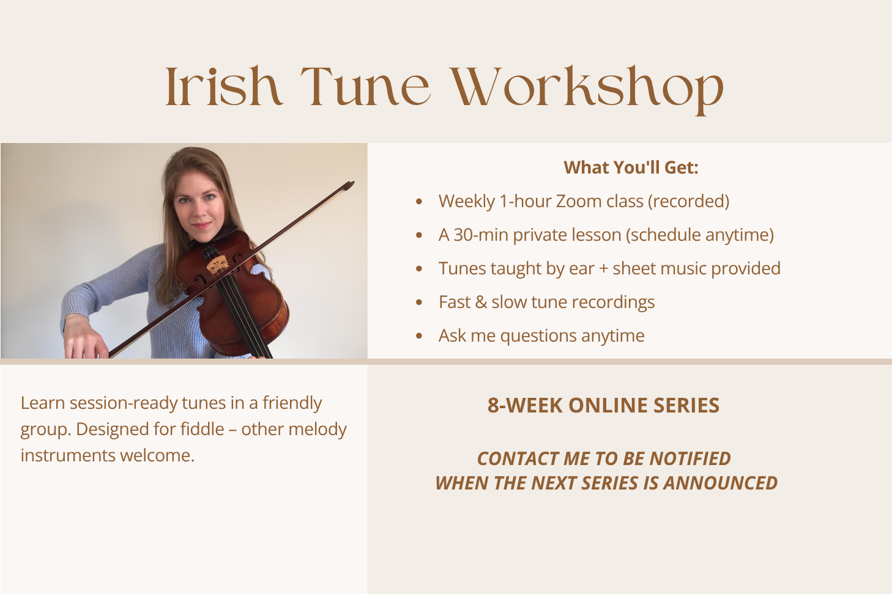

Starting October 5, I'm hosting a 4-week tune learning course designed for classical players learning traditional Irish music. Whether you want to play Irish music at home, or join in a local session, this will provide you with the tools and exact techniques so you can sound authentically Irish. I made this same jump myself, from classical training into a career as an Irish fiddle performer and teacher — so I know firsthand where the tricky spots are, and exactly how to work through them. It will be recorded for anyone who can't attend live. A new hour-long lesson drops every Monday at 5:30pm via YouTube — each week you'll learn a new tune, taught phrase by phrase (the real Irish way), broken into manageable chunks with repetition.
Designed for classically-trained violinists (a technical foundation helps), but all levels welcome as the class will be recorded, so you can revisit it as a practice video anytime. Grab your violin — this is a hands-on class, and you'll be playing along throughout.
Pay via one of the options below and put your email address in the notes. Venmo/Zelle preferred but credit card is also available. Confirmation sent within 24 hours.
Any questions? Contact me!
Join a friendly, welcoming space as you start (or continue) your traditional Irish fiddle journey.
I host an occasional 8-week traditional Irish tune learning workshop online. Email me (below) if you'd like to be notified when the next workshop is announced. We'll learn session-ready tunes in a friendly group.
Tunes will be taught at an intermediate level, though all levels welcome since recordings after each class allow you to learn at your own pace. While rooted in the Sligo style, these tunes are compatible with all styles of Irish music. Designed for fiddle, though other melody instruments welcome.
Interested in future workshops? Contact me to get on the waitlist.
Any questions? Contact me!
Come join a warm, low-pressure group and learn some great tunes.